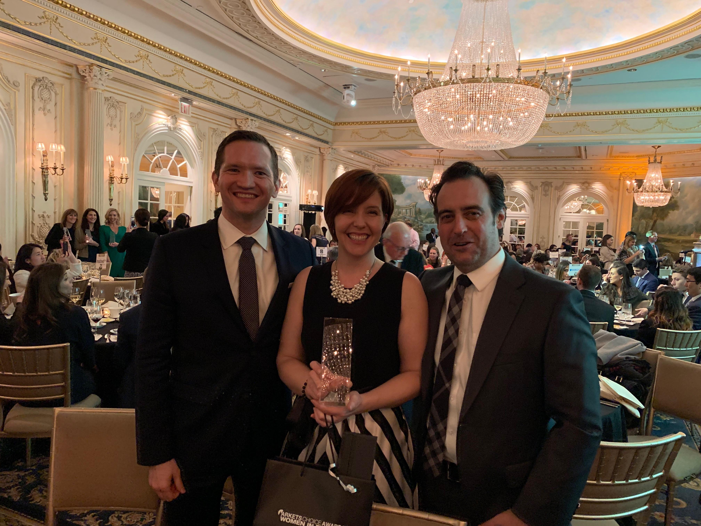
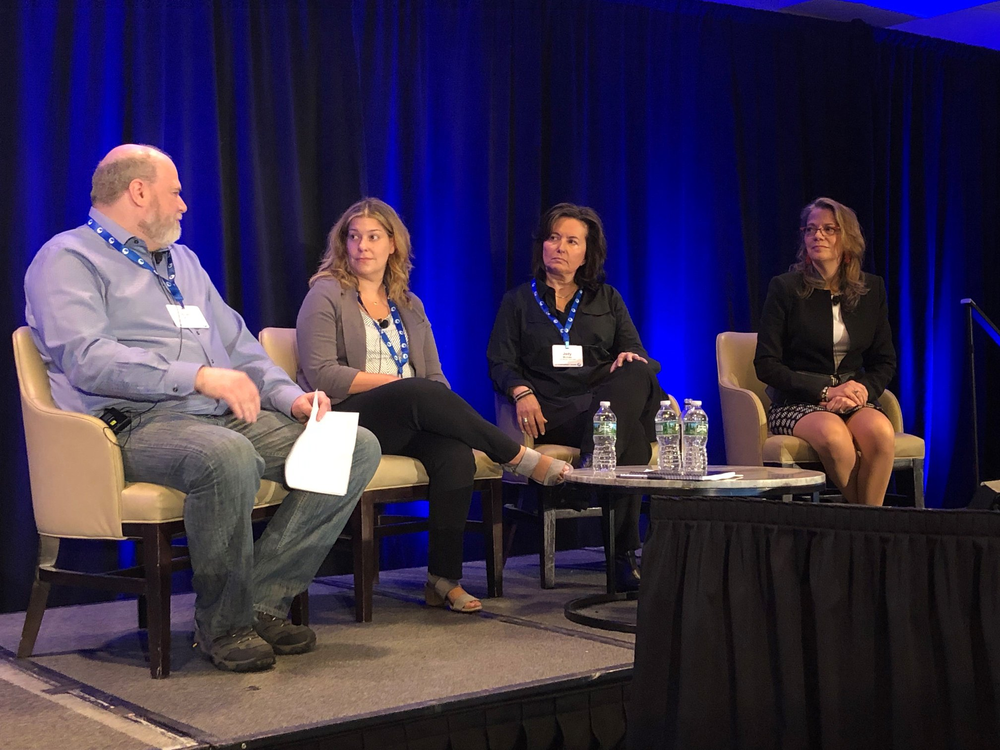

2018
December: On November 15th at the Markets Media 2018 Markets Choice Awards for Women in Finance, CTC’s Megan Spychalski was named a ‘Rising Star’. This award recognizes the most successful and respected women in the financial industry.

“I am most proud of the trust that others have placed in me to solve problems and build sustainable teams that are not afraid to evolve"-Megan Spychalski
October: On October 12th, a group of CTC team members attended the 2018 Booth Women Connect Conference. This conference brings together professionals of diverse backgrounds and creates an interactive forum for dialogue. It was an amazing day networking with a community of leading women professionals while listening to a wide variety of engaging speakers, panelists, insights and discussions. Our team enjoyed spending time with one another while discussing issues important to women today.
Booth Women Connect Conference 2018
September: CTC is proud to have been able to attend the Grace Hopper Conference in 2018! Check out our booth in 2019!
May: A group of CTC team members attended the 15th annual Women’s Leadership Conference in New York last week. While at the conference, CTC’s Director of People Development, Alison Potish, participated in a panel discussion focused on addressing unconscious bias. Alison discussed the work CTC is doing to fight unconscious bias and was joined on the panel by Jody Michael (CEO, Jody Michael Associates) and Sheryl Kurtis (EVP Head of Compliance Transformational Change and Regulatory Remediation, Wells Fargo). The panel was moderated by CTC’s Chief People Officer, Brad Marsh.

Women's Leadership Conference in NYC